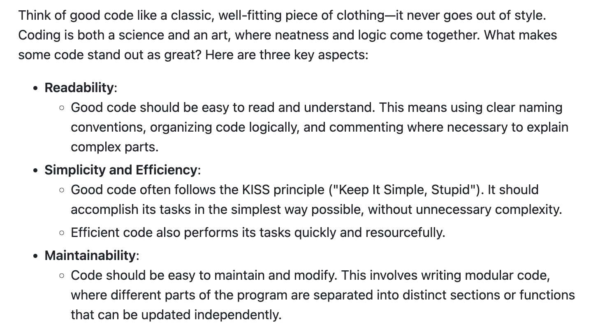
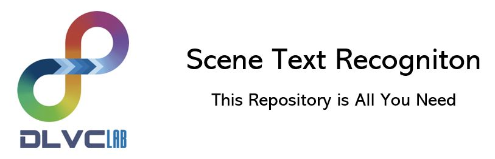
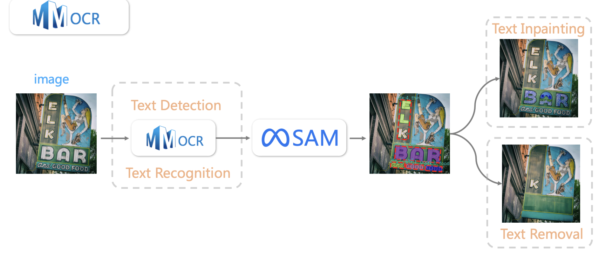
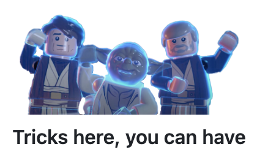
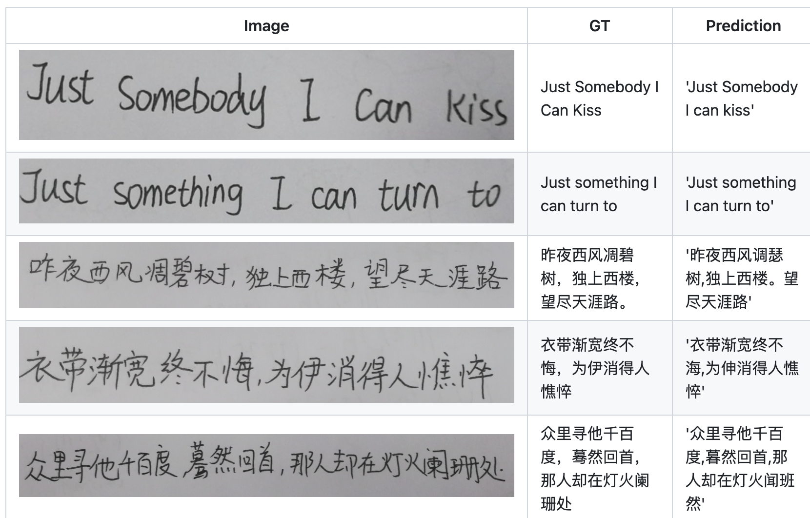
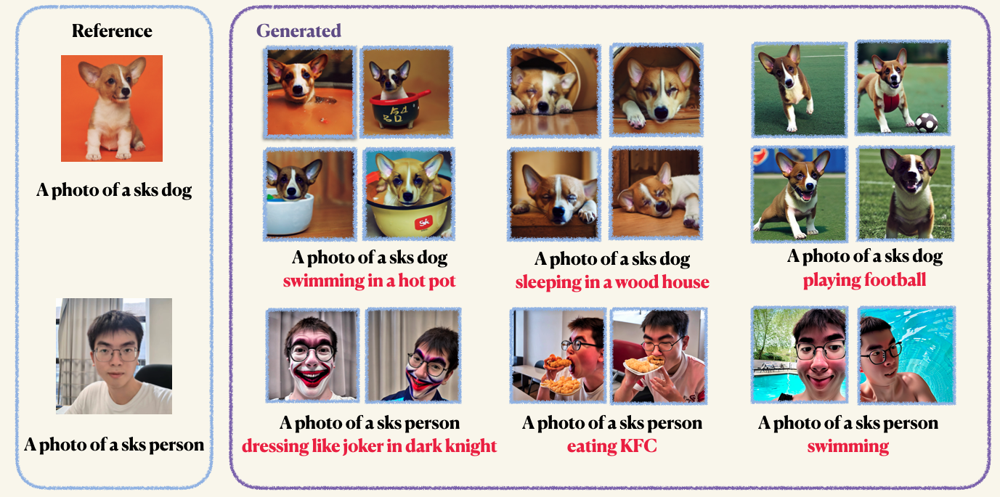

Open Source
I am dedicated to open source endeavors, which I believe is the fundamental element for the sustainable development of the AI community. Here are some open source projects I've contributed to or maintained, covering areas from computer vision to deep learning frameworks.


Cookbook to Craft Good Code
Cookbook to Craft Good Code
In this guide, we'll dive into the essentials of crafting great code. We'll go through everything from how to name things clearly and highlight tools that make coding better and easier.

MMOCR
MMOCR
OpenMMLab Text Detection, Recognition and Understanding Toolbox.


MMOCR
Scene Text Recognition Recommendations
Long-time maintaining project for recording latest papers, datasets, algorithms, and SOTAs for scene text recognition


OCR-SAM
OCR-SAM
Combining MMOCR with Segment Anything & Stable Diffusion. Automatically detect, recognize and segment text instances, with serval downstream tasks, e.g., Text Removal and Text Inpainting


Efficient Deep Learning
Efficient Deep Learning
Combining MMOCR with Segment Anything & Stable Diffusion. Automatically detect, recognize and segment text instances, with serval downstream tasks, e.g., Text Removal and Text Inpainting


Text Recognition on Cross Domain Datasets
Text Recognition on Cross Domain Datasets
Improved Text recognition algorithms on different text domains like scene text, handwritten, document, Chinese/English

